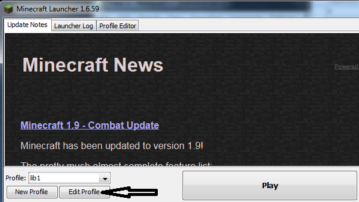

Getting Started
none
How to start playing?
After you download and install Minecraft on a PC, the first step to play on the Washington County Library Minecraft Server is to get your Minecraft name whitelisted. If you purchased a Minecraft account, fill out the Minecraft Player form to get your player name whitelisted. It may take up to 24 hours to whitelist a player. Dont have your own Minecraft account yet? We have a few accounts the public can use to play on our server. Fill out the Public Minecraft Player form and you can use one of the public computers at the library to play on our server. Ask a staff member to sign you into a public Minecraft account after downloading and installing Minecraft on a public PC.
- Alternative Installer for PC
- Download for Mac OSX
- Download for Linux/Other
- Not finding what you need? Go to the Minecraft Download Page for other installers.
Other Minecraft Installers
The library is running Spigot 1.8.8 so you will need to run Minecraft version 1.8.9 or 1.8.8 to play on the server. To change the version you must click Edit Profile after logging into Minecraft.
Choose version 1.8.9 or 1.8.8 and click Save Provile. Then select the big Play button
Once whitelisted and logged in, select Multiplayer.
Choose Add Server to connect to the library Minecraft server.
Give your server a name and enter in the IP: WCL.serverminer.com
You should now see the WCL Minecraft server listed. Click Join Server!
Claim land and prevent griefers?
There are two ways to claim land to protect it from griefers:
- Place a chest and you will automatically claim land in close proximity.
- Use the golden shovel to claim land. To obtain a golden shovel enter the command
/kit claimland. You can use this command once per day.
Watch this tutorial for more details on how to claim land using grief prevention.
Use chests to lock up your items. Watch this tutorial for more details.
Which commands are allowed?
There are a growing number of commands you can use to get around between the worlds. There will be much more to come!
Warps
The worlds available are the Library world (survival), Open (Opensurvival) and the nether. Mini-game worlds and possibly a creative world will follow soon.
-
/warp library - Use this command go back to the library world (survival).
-
/warp open - This warp takes you to the open world (opensurvival) world where no land claims exist. Build at your own risk. What you mine here can be brought back to the library world. In the future, PVP may be allowed in this world.
-
/warp nether - This warp takes you to the Library nether world where no land claims exist. Build at your own risk. What you mine here can be brought back to the Library or Open world. PVP allowed in this world.
-
/warp creative - This warp takes you to the creative world. Land claims are enforced for any building or mining.
/warp build- Use this command to warp to the build contest world. It is only available during build events. You can also use the portal located inside the library to get to the build world.
Commands you can use in the worlds. Some may be limited based on world. For additional information on how to use the commands, please reference the Minecraft Essentials command wiki.
-
/kit claimland - Use this command to get the golden shovel. It can be used once per day.
-
/fly - It may be survival mode but (for now) you can fly!
-
/tpa {playerName} - Send a request to the player asking to teleport to them.
-
/tpaccept {Name} - Accept a players /tpa request.
-
/tpahere {Name} - Asks the specified player to accept transport to your location.
-
/trust {playerName} - This command trusts a player on your claimed land (using the GriefPrevention plugin where you use the golden shovel). Lockette signs are not necessary if you claim land using GriefPrevention with the golden shovel
Build Contest World
-
/warp build - Use this command to warp to the build contest world. It is only available during build events. You can also use the portal located inside the library to get to the build world.
-
/p auto - Automatically claims the nearest available plot for you.
-
/p claim - Claim the plot you are standing on. The plot needs to be available, meaning it hasn't been claimed yet.
-
/p home - Teleport back to your home plot
-
/p clear - Clear your plot to default state. Must confirm with /plot confirm
-
/p trust {Name} - Trust a player to build on your plot
Slow or laggy computer?
If you are experiencing a slow computer there are some steps you can take to optimize your video settings to reduce choppiness. After you open up Minecraft go to Options. Click Video Settings
Below are suggested video settings.
What's coming next?
We have many great things we want to bring to our Library Minecraft Server. A couple of items include...
- Economy
- Factions
- Panem
- Plus many other fun mini games.
Questions, suggestions, report a player
Minecraft Server Rules
- Swearing, spamming, and griefing will result in ban.
- PVP is only allowed in the Nether at this time.
- No client-side mods.
- Bullying will result in a permanent ban.
Follow